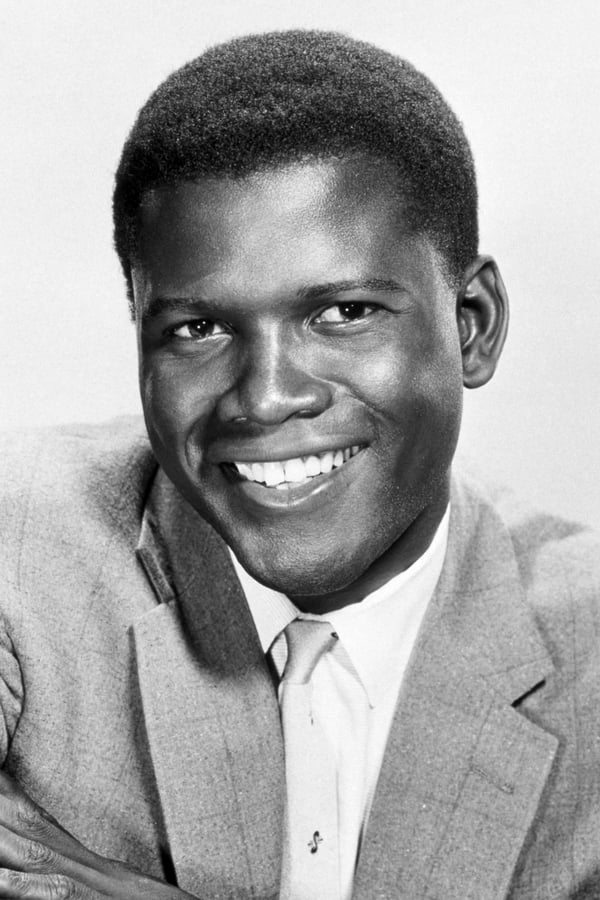

EXCLUSIVA
El popular actor volvió a su papel del Hombre Araña en la cinta “Spider-Man: No Way Home”. “Fue una sensación de cierre para mí”, comentó.
En su primera entrevista tras varias semanas del estreno de “Spider-Man: No Way Home”, a la revista Variety, el actor Andrew Garfield habló sobre el significado que tuvo esta película para él y cómo se sintió al volver a interpretar a su Peter Parker en el tan esperado “Spiderverso”. “Estoy muy agradecido. Estoy muy, muy agradecido de haber podido atar algunos cabos sueltos para el Peter que estaba interpretando. Amo ese personaje y estoy agradecido de haber podido trabajar con estos actores increíbles, este director increíble y Marvel en conjunto con Sony”, manifestó el actor. “Fue alegre y una sensación de cierre para mí. Había tantas preguntas sin respuesta para mi Peter, donde lo dejamos. Debo dar un paso atrás y curarlo un poco. Y también apoyando realmente a Peter (de Holland), y honrando a su personaje al completar esa trilogía, sin distraerla ni restarle valor”, añadió Garfield.
OSCARS 2022: QUINIELA DE LAS FAVORITAS A MEJOR PELÍCULA
De apuestas de Netflix como 'El poder del perro' hasta las 'feel-good' favoritas de la temporada como 'Belfast' y 'King Richard', estan son las candidatas a triunfar en los próximos premios de la Academia.
¿Cuáles serán las nominadas a Mejor Película en los próximos Oscars 2022? ¿Qué actores y actrices optan a la estatuilla más codiciada?
¿Qué producción podría acumular el mayor número de galardones? ¿Qué prometedora candidata se quedará fuera? De momento, las respuestas a
todas estas preguntas son un completo misterio y las apuestas están abiertas.
Por eso, especulamos sobre qué películas podrían tener mayor presencia en la ceremonia de los premios de la Academia de Hollywood.
En la lista incluimos títulos como 'El poder del perro', la nueva película de Jane Campion protagonizada por Benedict Cumberbatch,
y que podría llevar a Netflix de nuevo a lo más alto. Desde el palmarés del Festival de Venecia 2021 también llegan fuertes otras películas
como 'Spencer' de Pablo Larraín, con una Kristen Stewart en el rol de la princesa Diana que la tiene liderando todas las apuestas a Mejor Actriz,
y también la española 'Madres paralelas' de Pedro Almodóvar, con la que parece que Penélope Cruz podría conseguir una nominación.
A estas se unen películas como 'Belfast' de Kenneth Branagh, ganadora del Premio del Público en el Festival de Toronto, y la carismática
'King Richard' de Reinaldo Marcus Green, con un Will Smith que también podría agenciarse una nominación a Mejor Actor.
CALENDARIO OSCARS
- • Las votaciones comenzarán el 27 de enero y terminarán el 1 de febrero.
- • Las nominaciones oficiales se darán a conocer el 8 de febrero.
- • La ceremonia se celebrará el domingo 27 de marzo.
Muere Sidney Poitier, primer actor NEGRO en ganar un Oscar
El actor afroamericano ha fallecido este viernes a los 94 años según ha confirmado el ministro de Asuntos Exteriores de Bahamas. Consiguió el galardón con la película 'Los lirios del valle'.De apuestas de Netflix como 'El poder del perro' hasta las 'feel-good' favoritas de la temporada como 'Belfast' y 'King Richard', estan son las candidatas a triunfar en los próximos premios de la Academia.
La industria del cine estadounidense está de luto después de que en las últimas horas haya trascendido la noticia de la muerte de Sidney Poitier a los 94 años de edad. La muerte del actor, reconocido entre otras cosas por ser el primer actor afroamericano en conseguir un premio Oscar, ha sido confirmada por el ministro de Asuntos Exteriores de Bahamas, Fred Mitchell, haciéndose eco en las últimas horas los principales medios internacionales.
Alec Baldwin mata accidentalmente a una directora de fotografía durante un rodaje
El actor disparó una pistola de fogueo sin saber que estaba cargada con munición real que alcanzó a dos personas, la directora de fotografía de la película y al director, que está en la uci. «Mi corazón esta roto», aseguró el intérprete
Alec Baldwin está destrozado tras haber matado accidentalmente con una pistola de atrezo cargada con munición real a la directora de fotografía de la película Rust, Halyna Hutchins, un wéstern que el actor, de 63 años, rodaba en Santa Fe (Nuevo México, EE UU). «No tengo palabras para expresar la conmoción y tristeza por el trágico accidente que se ha llevado la vida de Halyna Hutchins, esposa, madre y colega a quien admiro profundamente», escribió Baldwin en las redes sociales. «Estoy cooperando plenamente con la investigación policial para abordar cómo ocurrió esta tragedia y permanezco en contacto con el esposo de Halyna, ofreciéndole mi apoyo. Mi corazón está roto por él, por su hijo y por todos los que conocieron y amaron a Halyna», expresó la estrella y también productor de la película. El confuso y trágico episodio sucedió en torno a las dos de la tarde del jueves en el rancho de Bonanza Creek, en Santa Fe, donde se filmaban varias escenas del wéstern. La pistola de atrezo que mató a Hutchins, de 42 años, y también hirió a Souza, de 48, contenía una «única bala real», según un correo electrónico enviado por el sindicato de trabajadores de Hollywood a todos sus miembros. En el mensaje se relata que los miembros del equipo de rodaje encargados del atrezo y la decoración de escenarios, efectos especiales y construcción no pertenecen al sindicato.
'OJO DE HALCÓN': VINCENT D'ONOFRIO RESPONDE A LAS CRÍTICAS HACIA SU KINGPIN
La lucha contra Kate Bishop y su gran fuerza no han convencido a algunos fans, pero el actor insiste, es el mismo Fisk que luchaba contra el Charlie Fox de 'Daredevil'.
'Ojo de halcón' tenía preparada como gran sorpresa, más allá de la cantada aparición de Florence Pugh, la llegada de Kingpin como nuevo gran villano al MCU. Aunque lo cierto es que muchos lo adivinaron poco después del capítulo 2, que además se emitió el mismo día que el primer. Eso sí, hubo que esperar hasta el 5 para la confirmación y hasta el último para verlo en acción, con batalla contra Kate Bishop incluida.
Pero parece que el final de 'Ojo de halcón' ha dado mucho que hablar, también en torno a Kingpin, al que da vida Vincent D'Onofrio al igual que en la serie 'Daredevil'.
Con Charlie Cox ya confirmado como Daredevil del MCU, tenía todo el sentido del mundo que ambos universos se confirmasen como juntos. Ha sido precisamente el actor quien ha respondido en el Podcast ComicBook Nastion a algunas de las críticas hacia la aparición de su personaje en la serie.
Más allá de que era una sorpresa muy obvia, algunos le achacaron que demuestra demasiada fuerza en la lucha mano a mano contra el personaje de Hailee Steinfeld.
Sabes, me enteré recientemente, un par de fans estaban muy emocionados al respecto, aunque el gran tema era sobre la
fuerza que tengo porque estoy lanzando a Kate Bishop y esas cosas. Pero, lo había olvidado por completo.
Acabo de ver un clip en Twitter de Charlie Cox y yo peleando en la primera temporada de 'Daredevil'. Obviamente,
Steven DeKnight es un director increíble,
ayudó a desarrollar el personaje de Wilson Fisk. Hay una escena que filmamos en un callejón, en una calle de
Brooklyn, donde literalmente estoy lanzando a Daredevil por el aire. Lo estoy levantando y lanzándolo 15 pies
hacia un bote de basura. Lo hago un par de veces en esa pelea. No es diferente, en realidad no lo es. Por eso,
sigo diciendo que es el mismo Fisk que estaba en 'Daredevil'. Es el mismo canon, pero la gente se confunde con las cosas. Lo entiendo.
Matrix: El nuevo acto de generosidad de Keanu Reeves fue «épico»
Mientras caminaba por la alfombra verde en el estreno de Matrix Resurrections en el histórico Teatro Castro de San Francisco, Chad Stahelski, doble de riesgo de Neo en la trilogía Matrix para dirigir Reeves en la franquicia de John Wick, confirmó el generoso gesto
«Nos llevó a un montón de nosotros aquí», dijo Stahelski. “Es increíblemente generoso. Entre el público de esta noche habrá muchas personas que lo ayudaron. Desde sus entrenadores de artes marciales hasta sus entrenadores de jiu-jitsu, el cabello y el maquillaje hasta su equipo de especialistas. Se asegura de que sus amigos y familiares estén aquí. Es épico». También es modesto. Reeves rara vez comenta sobre tales actos y cuando el medio le preguntó por qué el desembolso para el fin de semana especial y organizar el evento para sus equipos, solo ofreció esto, de la manera característica de Keanu: «Sí, es genial poder compartir nuestras experiencias y vidas juntos».